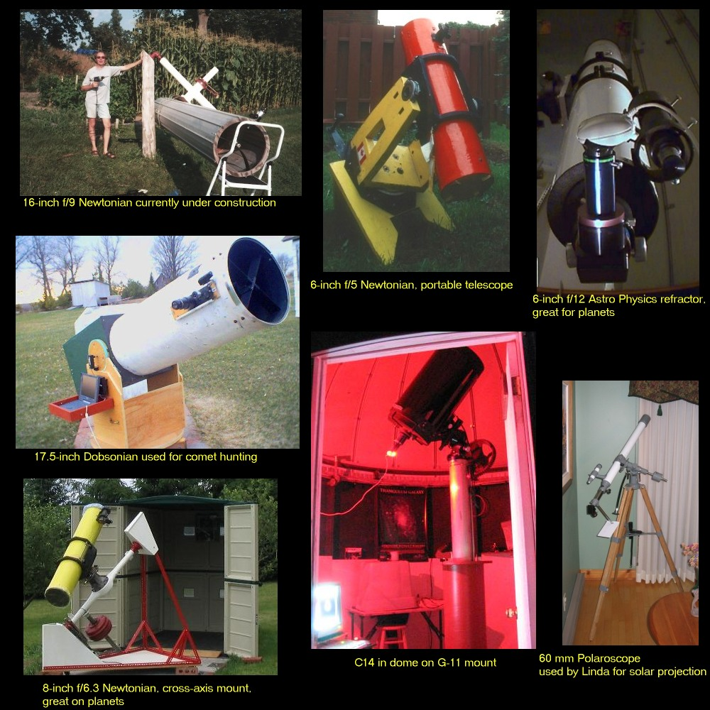

This page shows the current telescope collection, as of October, 2005. Three of them are commercially made and 4 are homebuilt.
The 6-inch f/12 Astro Physics Super Planetary refractor is shown when it was in the dome, currently occupied by the recently-acquired C14. Notice the ToUcam being used with a 3X barlow.
The 16-inch monster Newtonian gave some excellent planetary views but I am re-figuring the mirror prior to re-aluminizing.
Linda was using the 60-mm refractor even before we met and now she still enjoys solar projection using this telescope.
Return to Home page.
